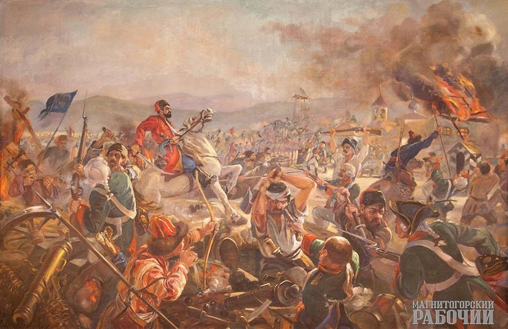
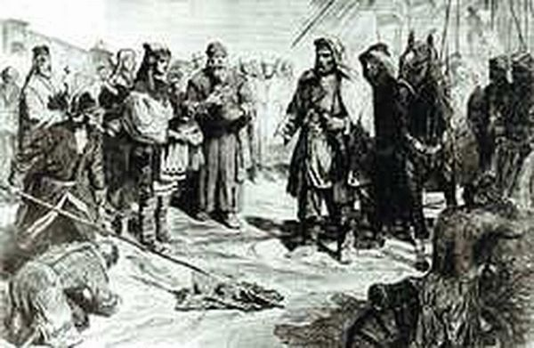

Восстание Емельяна Пугачева - восстание яицких казаков, переросшее в полномасштабную войну казаков, крестьян и народов Урала и Поволжья с правительством императрицы Екатерины II. В 1772 году в Яицком городке вспыхнуло восстание казаков против старшинской верхушки войска и представителей правительства.
27 июня 1774 года войска Емельяна Пугачева заняли Ижевский завод. Здесь Пугачев пробыл два дня, принимая жалобы рабочих и приписных крестьян. При этом заводское начальство было казнено, завод был частично разрушен. Здесь Пугачев пробыл два дня. Недовольные местной властью рабочие разгромили дома начальства и заводских богатеев.
Жестокая расправа в Ижевске ожидала и полковника Федора Венцеля, главного командира Гороблагодатских и Камских заводов, пытавшегося противостоять Пугачеву. Труп полковника Венцеля был зарыт на берегу пруда возле ключа, который получил у населения впоследствии название Полковницкого ключа.
Пугачев объявил приписным, что освобождает их на семь лет от уплаты подушной подати и ликвидирует недоимки по ней за все прошлые годы. Из денег, оставшихся в заводской казне, он выдал рабочим по два, а тем, кто пожелал вступить в его войско, – по три рубля.
29 июня Пугачев выступил из Ижевского завода.
X
Захват Воткинского завода
23 июня Пугачев переправился на правый берег Камы и, опередив высланный Венцелем отряд под командой Алымова и Клепикова, 24 июня Емельян Пугачёв без боя овладел Воткинским заводом. Воткинский и Ижевский заводы пострадали неодинаково. Ижевский завод был «вызжен до почвы», уцелело только 150 домов. Общий убыток (не считая сожженного) составил около 30 тысяч рублей. В Воткинске сгорели лишь церковь, дом управителя, заводская контора и была разрушена кричная фабрика. Общие убытки не выяснены. Повешены те, кто отказался присягать Пугачёву.
X
Сражение у Татищевой крепости
Сражение, произошедшее между правительственными войсками и главной армией Емельяна Пугачёва у крепости Татищевой, стало первым серьёзным поражением пугачёвцев. К стенам крепости подошёл соединённый корпус генералов Голицына и Мансурова (7000 человек при 25 орудиях). На разведку был выслан разъезд чугуевских казаков, обнаруживший в крепости многочисленных повстанцев. Попытка догнать их не увенчалась успехом, был пленен лишь один казак, сообщивший о составе правительственного корпуса. Задуманный план нарушен, сражение началось с артиллерийской дуэли, длившейся 4 часов без успеха для обеих сторон. Потери повстанцев составили 1315 чел. убитыми в крепости и 1180 убитых при отступлении, среди которых был и атаман Арапов, около 4 тысяч чел. было взято в плен, из них много раненных, в крепости осталась вся артиллерия и обоз; правительственные войска потеряли 141 чел. убитыми и 516 ранеными.
X
Бузулукская крепость
Подступив в начале октября 1773 к Оренбургу и осадив его, Е.И.Пугачев разослал по крепостям и селениям Самарской дистанции небольшие отряды, которые уводили с собой людей и вывозили хлеб. С конца октября повстанцы стали появляться и вблизи крепости. 30 ноября в крепость вступил пугачевский атаман И.Ф.Арапов. Забрав в свой отряд местных солдат и казаков, он отправился к Самаре, овладел ею и 4 дня удерживал в своих руках.
Более 2-ух месяцев крепостью управлял примкнувший к восставшим местный атаман Яков Пустаханов (его сын Игнатий служил в пугачевской Военной коллегии). С января 1774 развернулось наступление от Самары к Оренбургу карательной бригады П.Д.Мансурова. С боями отходя на восток, Арапов решил воспрепятствовать дальнейшему продвижению генерала и занял оборону в Бузулукской крепости. Но в происшедшем здесь 14 февраля бою Мансурова со своей бригадой нанесли поражение отряду Арапова, который был вынужден отступить к Сорочинской.
X
Осада Самары
24 декабря 1773 года под звон церковных колоколов в Cамарский край прибыли войска Емельяна Пугачева, а через сутки Самара стала первым в России крупным городом, перешедшим на сторону Емельяна Пугачева и его сторонников. Утром 24 декабря, желая проверить готовность самарцев к обороне города, власти забили в колокола, извещая тем самым о тревоге. Но жители города явились на зов не воружонные. Собравшись вместе на городском валу, они глядели в степную даль в ожидании войск Емельяна Пугачева. А атаман Арапов с казаками занял Алексеевск ночью 23 декабря и без боя взял крепости между Бузулуком и Самарой. Чуть раньше его передовые разъезды вошли в пригород Самары. А 24 декабря в местной церкви отслужили молебен и собравшимся жителям были зачитан манифест о восшествии на престол Петра III и был зачитано распоряжение о наборе добровольцев в повстанческую армию.
Таким же образом была захвачена Самара, 25 декабря город без сопротивления был сдан повстанцам.
X
Осада Царицына
Штурм Царицына войсками Емельяна Пугачёва — сражение, произошедшее 21 августа 1774 года между восставшими под предводительством Емельяна Пугачёва и войсками Российской империи во главе с полковником Иваном Цыплятевым. Коменданту Царицына полковнику Цыплятеву удалось собрать в крепости 6000 человек и 73 пушки, у Пугачёва было около 10 000 человек. Первое столкновение между ними состоялось в бою при Мечётке (вблизи нынешней станции), где Пугачёв разбил отряд царских войск. В результате этой стычки царские войска отступили к крепости. Царицын стал первым городом, который не сдался Пугачёву. Успех правительственных войск был достигнут благодаря деятельности коменданта города Ивана Цыплятева, а также известию о приближении корпуса царских войск под руководством генерала Михельсона. Пугачёв отступил к Чёрному Яру и 24 августа в сражении у Солениковой ватаги был разбит. Потерпев поражение, Пугачёв с остатками своих отрядов бежал вдоль Волги на юго-восток.
X
Сражение у Казани
12 июля армия Е. И. Пугачёва вступила в Казань и приступила к осаде казанского кремля, где укрылись остатки жителей и гарнизона. Город подвергся погрому, бо́льшая часть зданий была уничтожена или разграблена.
На помощь осаждённым скоро подошёл отряд под командованием подполковника И. И. Михельсона численностью ~1000 чел. Вечером 12 июля на Арском поле состоялось 1-ое сражение, после которого повстанцы отступили и начали готовиться к решающему бою, доведя численность своего войска до 25 тысяч чел. Тем не менее, 15 июля нестройные ряды наступающих повстанцев были рассеяны регулярными частями Михельсона, усиленными отрядом в 150 чел. из казанского гарнизона П. С. Потемкина, и обращены в бегство. Кроме того среди 3000 убитых пугачевцев был опознан один из приближенных Пугачева, атаман И.Грязнов. Этот разгром фактически оставил Пугачёва без армии, т.к. у него остались лишь несколько сотен повстанцев, с которыми он бежал на правый берег Волги.
X
Бой у Юзеевой крепости
Бой у Юзеевой — сражение у деревни Юзеева, одно из крупнейших поражений правительственных войск от повстанцев на начальном этапе восстания. 7 ноября генерал Кар получил сведения от местных жителей, что пугачёвский атаман Хлопуша возвращается к Оренбургу с Авзяно-Петровского завода. На перехват отряда Хлопуши Кар отправил сводный отряд секунд-майора Шишкина, приказав ему занять Юзееву. Часть татар из состава правительственного отряда перебежала на сторону повстанцев. Тем не менее, Шишкин сумел сохранить строй и после перестрелки и нескольких картечных залпов из пушек казаки Зарубина были рассеяны. Шишкин почти без потерь занял деревню. Овчинников и Зарубин преследовали отступавший отряд Кара на протяжении 17 вёрст около 8 часов и лишь закончившиеся запасы пороха вынудили их оставить преследование. Узнав о пленении отряда Карташева и пополнении в рядах мятежников, 9 ноября Кар приказал к отступлению из Юзеевой. Не считая перебежчиков, Кар потерял 123 чел. убитыми.
X
Сорочинская крепость
Первый разведывательный отряд повстанцев появился здесь во второй половине октября 1773 г. Сорочинский гарнизон не только не оказал какого-либо сопротивления пугачевцам, но и присоединился к ним. С 17 ноября крепость находилась под полным контролем повстанцев и оставалась в их руках около четырех месяцев. Пугачев во главе с отрядом в 1500 человек прибыл в Сорочинскую крепость, чтобы дать бой генералу Голицыну. Под утро 6 марта солдаты были внезапно атакованы повстанцами во главе с Пугачевым. 5 марта авангардная команда императорских войск под командованием майора В. Елагина вступила в деревню Пронькино и расположилась здесь на ночлег. Под утро 6 марта солдаты были внезапно атакованы повстанцами во главе с Пугачевым. Сражение продолжалось более трех часов. Нападение Пугачева было отбито, и он отступил к Сорочинской крепости. Чтобы затруднить продвижение правительственных войск, Пугачёв сжёг 7 марта 1774 года Сорочинскую крепость и отошёл к Татищевой.
X
Осада Елабуги
Впервые пугачевцы объявились в окрестностях Елабуги в начале ноября 1773 года. Немаловажное значение в обороне села сыграла деревянная елабужская крепость, возведенная веком ранее для защиты от камских пиратов и набегов башкир. Около двенадцати раз повстанцы пытались захватить Елабугу, в том числе применяя различные военные хитрости, но безуспешно. Однако к середине января запас боеприпасов у осажденных иссяк, а под Елабугой собралось порядка шести тысяч мятежников. Село было бы неминуемо захвачено и разорено, но на подмогу Перскому уже шли правительственные отряды под командованием капитана Кардашевского и секунд-майора Неклюдова. Каратели наголову разбили пугачевцев, а в Танайке устроили кровавую бойню: более двухсот пленных было выведено на ближайшее поле и изрублено саблями. Такую же жестокую расправу военные учинили и в остальных восставших деревнях Елабужского края. В результате этого крестьянские волнения в здешних местах затихли вплоть до лета 1774-го, когда Пугачев после неудачной осады Оренбурга двинулся на Каму.
X
Троицкая крепость
19 мая войска Пугачева по линейной дороге подошли к Троицкой крепости с юго-западной стороны. По мнению одного из современников Пугачевского восстания А. Поспелова, «Легкое взятие этой крепости самозванцем очевидно объясняется тем, что Троицкая крепость имела слишком обширные укрепления, сравнительно с численностью стоявшего в ней гарнизона, которым нельзя было занять всю линию укреплений».
X
Саратов
Утром 6 августа трехтысячная армия Пугачева с 13 орудиями подошла к Саратову по Московской дороге. Пугачев подошел к Саратову уже с остатками повстанческой армии, ослабленной непрерывными боями и поражением под Казанью. Здесь, сосредоточив свои главные силы, Пугачев ставит цель - взять Саратов. Гарнизон города был малочислен, укрепления находились в плохом состоянии, артиллерии не хватало снарядов. Астраханский губернатор Кречетников, которому подчинялось все нижнее Поволжье, возложил оборону города Саратова на коменданта И.К. Бошняка. Армия Пугачева расположилась на Соколовой горе. В это время в атаку пошла пугачевская пехота. Прапорщик Соснин с отрядом из 20 человек открыл Симбирские ворота и перешел на сторону пугачевцев. Казаки вышли через ворота в тыл правительственных войск. Комендант города, оставленный один на один с армией Пугачева, не смог должным образом организовать ей сопротивление. Пугачев, при поддержке местных жителей и перешедшего на его сторону отряда, штурмовал город. Осажденные сами открыли ему ворота и Емельян Иванович Пугачев занял город Саратов.
X
Дмитриевск
В Камышине (Дмитриевск), куда Пугачев прибыл 11 августа, к нему присоединилось 600 украинских казаков.
X
Осада Темникова
9 августа пугачевцы заняли и разграбили город Темников. В это время толпа встретила их с коленопреклонением и с жалобами на Саровских монахов. Благосклонно выслушал эту речь государев полковник и обещал разобрать дело. Между тем освобождены были все колодники и народу роздана была казенная соль без весу и безденежно. На другой день мятежники пошли на казенный винокуренный завод, находившийся близ Темникова, ворвались в дом заводского управляющего, переломали и перебили там мебель и посуду, печи, полы и стекла.
X

Взятие Магнитной крепости
Пятого мая 1774 года войско Пугачева подошло к крепости Магнитной. Пугачев предложил крепости сдаться, но осажденные ответили огнем. Штурм был отбит. Оборону возглавлял комендант крепости Сергей Тихановский с гарнизоном в сто человек. В крепости на этот момент находились, судя по духовной росписи 1773 года, много женщин, стариков и детей. В Магнитной крепости Пугачев стоял два дня. Здесь к нему присоединились отряды атаманов Белобородова из-под Екатеринбурга, Овчинникова и Перфильева из-под Яицкого городка. Пугачев принимал их торжественно, стоя у палатки, окруженный знаменами. Среди прибывших был и Д.В. Верхолонцев (ему удалось выйти живым из этой истории и оставить воспоминания), прибывший с отрядом Белобородова. Достоверно известно, что в крепости Магнитной Пугачев казнил коменданта Тихановского, его жену, священника и жену поручика Можентинова. Уходя, Пугачев приказал сжечь Магнитную.
X
Осада Осы
19 июня, перевалив Петухову гору, посады Осы заполонили повстанцы. Их было около восьми тысяч. Под бревенчатыми городнями собрался весь ареопаг бунта: Емельян Пугачёв и Андрей Овчинников, Иван Белобородов и Иван Грязнов, Кинзя Арсланов и Салават Юлаев. Пугачёв решил брать крепость Осу штурмом. Оса оборонялась уверенно и сердито. Из ворот Пытальной башни капитан Смирнов выводил солдат в контратаки, но солдатские штыки гнулись о клеёные «холщовые латы» башкир. Наконец Пугачёву наскучило бодаться с крепостью. Бунтовщики потащили к стенам Осы охапки сена и хвороста. Майор Скрипицын рассмотрел эти приготовления сквозь стрельницы башен в подзорную трубу и понял, что Пугачёв не собирается уходить, оставив крепость непокорённой. После победы над Осой Пугачёв расстался с башкирами. Он уходил вниз по Каме на Казань, но за Камой для башкир начиналась чужая земля – не Башкирия, и туда они идти не захотели. Пугачёв принял это. Из всех башкир с ним отправился один лишь Кинзя.
X
Осада Пензы
В Пензу Пугачёв прибыл 2 августа 1774 года. Пугачёвцы потребовали от городской власти открыть все её кабаки и соляные амбары, выпустить из тюрьмы заключённых. Воевода А.А. Всеволожский был убит. В доме купца Кознова Пугачёву дан праздничный обед. Захватив из города пушки и порох, а также казну, предводитель восстания потребовал под угрозой сожжения города 500 человек для его армии. Через два дня в город вступили правительственные войска, возглавляемые полковником И.И. Михельсоном. В Пензе сам главнокомандующий генерал-аншеф граф П.И. Панин образовал свой штаб. На последних этапах борьбы с пугачёвцами участвовал генералиссимус А.В. Суворов, прибывший с турецкого театра военных действий. Именно он привез пленённого Пугачёва в Москву, где его казнили. Население отбитых у Пугачёва сёл и городов снова приведено к присяге императрице, участники волнений были жестоко наказаны.
X
Осада Ставрополя
Стремясь к территориальному расширению восстания, пугачевская Военная коллегия начала его организацию в Поволжье. Крепостной атаман Арапов разослал по селам и деревням агитаторов с копиями манифестов Пугачева и начал готовить нападение на Ставрополь. Однако 29 декабря 1773 г. Арапов был выбит из Самары царскими войсками, а через девять дней вновь разбит в соседнем Алексеевске. Но даже после этого калмыки продолжили борьбу. 20 января 1774 г. отряд Федора Дербетова внезапно овладел Ставрополем. Калмыки разграбили дома богачей, взяли шесть пушек и захватили коменданта и трех его помощников, которых позже убили. Возвращаясь в Берду, Дербетов столкнулся с отрядом, освободившим от Арапова Самару. В ходе ожесточенного боя калмыки потеряли 5 пушек и 160 человек убитыми и взятыми в плен9. Но потерпев поражение на поле боя, повстанцы разожгли огонь восстания в этих местах и даже в Среднем Поволжье.
X
Борская крепость
Основана в 1736 г. на правом берегу р.Самары, в 115 верстах к востоку от г.Самары. Весной 1773, за несколько месяцев до начала Пугачевского восстания, в Борской было 243 двора, в которых проживало 1230 жителей. Крепость охранялась сотней казаков во главе с атаманом Н.Т.Рогожниковым. Борская крепость была взята без боя. Во-первых, к этому времени она была очень плохо укреплена: стены ее пришли в ветхое состояние; во-вторых, защищать ее было некому. Перед этим для защиты Оренбурга из крепостей Самарской линии было набрано войско, потерпевшее поражение в первых стычках с отрядами Пугачева. В крепостях же остались обыватели, имевшие на вооружении самодельные копья и рогатины. Пугачевцы (встреченные колокольным звоном, иконами, крестами, хлебом и солью), видимо, пробыли в крепости 3-4 часа. Расположили свои обозы на площади около церкви, где тут же разделывали баранов, приведенных казакам поселянами, и варили обеды. Жителей не трогали. Перед отъездом наскоро сделали виселицу. Затем вывели коменданта Борской крепости капитана Рогова, находившегося под арестом, и, посовещавшись, повесили.
X
Бой у Сакмарского городка
Бой у Сакмарского городка — сражение, произошедшее первого апреля 1774 года у Сакмарского городка. В ходе боя войска генерала П. М. Голицына нанесли повстанцам сокрушительное поражение. В развернувшемся сражении повстанцы оказали упорное сопротивление, не раз переходили в контратаки. Передовой отряд пугачёвцев попал под огонь артиллерии и был рассеян; преследуемый неприятельской конницей, Пугачёв с пятью сотнями казаков, башкир и заводских крестьян бежал на северо-восток, к селу Ташла. Разгром повстанческого отряда довершил авангард правительственных войск полковника Хорвата, который преследовал повстанцев до Сакмары. Потери мятежников составили 400 убитыми и 3500 пленными; кроме того, войска Голицына захватили всю артиллерию. Потери Голицына составили 254 человека убитыми и ранеными, или 46 убитых и 208 раненых.
Боем у Сакмарского городка завершился первый этап Крестьянской войны 1773—1775 годов.
X
Осада Яицкой крепости
Осада Яицкой крепости — неудачная попытка армии Емельяна Пугачёва захватить Яицкий городок. Правительственный гарнизон под командованием подполковника И. Д. Симонова, находившийся в Яицком городке, в самом начале восстания сумел отбить попытку взятия города армией Е. Пугачёва, а затем построил в городе внутреннюю городовую крепость — «ретраншмент». Атаманы яицких казаков, составлявших костяк армии Пугачёва на начальном этапе восстания, не могли смириться с нахождением в Яицком городке правительственного гарнизона и настояли на необходимости его уничтожения. Гарнизон крепости успешно оборонялся с 30 декабря 1773 года по 16 апреля 1774 года и дождался снятия осады корпусом генерала П. Д. Мансурова.
X
Захват Белорецкого завода
13 апреля Михельсон получил ордер от Фреймана, в котором генерал сообщал, что следует к Стерлитамакской пристани и предписывал идти к Екатеринбургу, чтобы отсечь Пугачеву туда дорогу. Михельсон был довольно независим в принятии решений и часто действовал по собственному усмотрению. Еще в конце марта он намеревался идти к Уральским горам. В начале апреля, узнав, что Пугачев находится на Вознесенском заводе, собирался идти на Белорецкий завод. 23 апреля Пугачев приезжает на Белорецкий завод. Пугачев пробыл на тут всю вторую половину апреля и прекрасно использовал предоставленную ему передышку. Башкирские старшины во все стороны рассылали «государевы указы», набирали ему людей, гнали лошадей, скот. 22 мая 1774 года, выполняя волю Пугачева, Белорецкий завод сжигают. Сжигается и заводской поселок, и деревня Укшук. Все крепостные – работные люди с семьями и своими пожитками, конным обозом уходят в Магнитную крепость к Пугачеву.
X
Осада Красноуфимска
Накануне Пугачевского восстания службу в городе несли 300 казаков (обязанности атамана исполнял есаул Г.А.Овчинников). Городом управлял воевода поручик Н.А.Бахматов, имевший при себе штатную команду из 20 солдат. 10 января 1774 Бахматов и Овчинников без какого-либо сопротивления сдали Красноуфимск отряду пугачевского полковника Салавата Юлаева, к которому присоединилось большинство местных казаков.
По их требованию Салават сместил прежних правителей и назначил атаманом казачьей команды М.И.Попова, а в есаулы произвел М.Д.Чигвинцева. До сотни казаков вскоре ушли к Кунгуру, участвовали в боях с осажденным в нем гарнизоном и ополчением горожан. 30 января повстанческие отряды потерпели поражение в бою у села Ордынского и от Кунгура отступили. Красноуфимские казаки-пугачевцы отошли в свой город при поддержке отряда Салавата Юлаева. Пытаясь здесь закрепиться, они однако, потерпели поражение и, оставив Красноуфимск, переправились на левобережье Уфы.
11 июня город был занят войском Е.И.Пугачева, которое в тот же день отправилось к Кунгуру. В последние летние месяцы Красноуфимск находилсяпод угрозой нападения со стороны повстанческих отрядов. Осенью 1774 близ него располагалось соединение правительственных войск, время от времени совершавшее карательные рейды по окрестным мятежным волостям и селениям.
X
Осада Сарапула
С декабря 1773 года по июль 1774 года село Сарапул оказалось в районе пугачевского восстания. Восстанием крестьян волости руководил Яков Зылев - крестьянин Сарапульской дворцовой волости, пугачевский атаман. В феврале 1774 правительственные войска взяли Сарапул и населенный пункт вновь стал проправительственным оплотом.
X

Осада Саранска
За три дня пребывания в Саранске повстанческих войск было казнено 300 дворян разного пола и возраста, разграблены казначейство, дома знати, чиновников и купцов. 29 июля Пугачев решил покинуть Саранск, поскольку против него из Арзамаса и Алатыря выступила регулярная армия. Через два месяца Емельян Пугачев все-таки вернулся в город. Но уже в оковах, по пути в Москву, где предводителя крестьянского восстания прилюдно казнили.
X
Златоустовский и Саткинский заводы
25 декабря 1773 г. на Саткинский завод прибыл назначенный Военной коллегией
руководитель восстанием в Исетской провинции Иван Никифорович Грязнов. Его
сопровождал отряд в 100 чел. Через четыре дня он пришел на Златоустовский завод уже с
отрядом в 400 чел. На заводе им была конфискована казна. Кроме того, И. Н. Грязнов
готовился к осаде Челябинска и укомплектовывал на заводах свое войско: он взял на
Златоустовском и Саткинском заводах по 100 чел. и 4 пушки. В конце марта 1774 г. отряды Салавата Юлаева и Ивана Белобородова встретились в
деревне недалеко от Саткинского завода. Весь апрель Белобородов набирал в свой отряд
людей с завода и крестьян из окрестных деревень. В конце апреля 1774 г. И.
Белобородов ушел с Саткинского завода на соединение с Пугачевым. Таким образом, с
середины марта по апрель 1774 г. Сатка была базой войск Белобородова. 31 мая 1774 г. Пугачев с отрядом в 2000 чел. прибыл на Златоустовский завод, где
собрал 150 чел., годных к воинской службе и вооружил их копьями. На первом этапе восстания на Урале Пугачев использовал горные заводы как
материальные базы, где повстанческая армия пополнялась людскими ресурсами,
военными припасами, продовольствием, фуражом, и пр. Но при уходе с Урала на Каму и
Волгу Пугачев приказывал жечь заводы, уничтожать заводские поселения и уводить заводских жителей. Все это делалось из стратегических соображений, чтобы лишить
правительственные войска возможности пополнять свои силы на заводах.
Поэтому, покидая Златоустовский завод, Пугачев приказал башкирам уничтожить
его. В огне погибли все строения - и производственные, и жилые. Вскоре после
уничтожения Златоустовского завода Пугачев неожиданно подошел к Саткинскому
заводу. После занятия Саткинского завода Пугачев 3 июня напал вблизи Сатки на отряд
Михельсона, но последний сумел отбиться. Оба завода Лугинина - Златоустовский и Саткинский - были разрушены до
основания.
X
Осада Петровска
В Петровске, куда Пугачев вступил 5 августа, он захватил 9 пушек, 10 пудов пороху, много свинца, казну и другое имущество. Здесь к нему присоединилось более 300 пахотных солдат, а также 60 донских казаков.
Приход донцов обрадовал Пугачева. Он хорошо принял своих земляков, разрешил заходить к нему в палатку утром и вечером и выдал им денежное жалованье (старшинам по 20, а казакам по 12 рублей). Сотника Ивана Мелихова и хорунжего Калабродова, пожалованного позже в полковники, Пугачев наградил медалями.